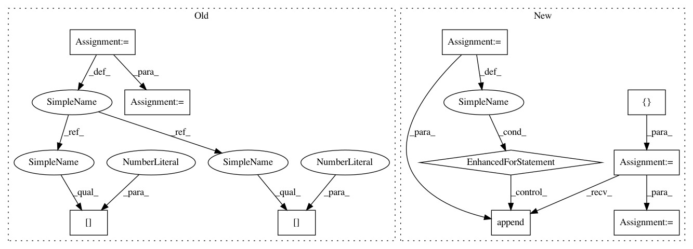

30028c6256de0cef715095e3994e396025c068d4,pixyz/distributions/flow_distribution.py,InverseTransformedDistribution,sample,#InverseTransformedDistribution#Any#Any#Any#Any#Any#,192
Before Change
reparam=reparam)
// inverse flow transformation
_z = get_dict_values(sample_dict, self.flow_output_var)
_y = get_dict_values(sample_dict, self.cond_var)
if len(_y) == 0:
x = self.inverse(_z[0])
else:
x = self.inverse(_z[0], y=_y[0])
output_dict = {self.var[0]: x}
if return_all:
After Change
@property
def prob_factorized_text(self):
var_text = ",".join(self.flow_output_var + self.cond_var)
flow_text = "{}=f^{{-1}}_{{flow}}({})".format(self.var[0], var_text)
prob_text = "{}({})".format(self._name, flow_text)
return prob_text
@property
def logdet_jacobian(self):
Get log-determinant Jacobian.
In pattern: SUPERPATTERN
Frequency: 3
Non-data size: 10
Instances
Project Name: masa-su/pixyz
Commit Name: 30028c6256de0cef715095e3994e396025c068d4
Time: 2020-05-04
Author: kaneko@weblab.t.u-tokyo.ac.jp
File Name: pixyz/distributions/flow_distribution.py
Class Name: InverseTransformedDistribution
Method Name: sample
Project Name: masa-su/pixyz
Commit Name: 57830b8c78a8f0997f9a7dc61d33a1bf1adb3ca5
Time: 2021-01-25
Author: kaneko@weblab.t.u-tokyo.ac.jp
File Name: pixyz/distributions/flow_distribution.py
Class Name: InverseTransformedDistribution
Method Name: sample
Project Name: masa-su/pixyz
Commit Name: 30028c6256de0cef715095e3994e396025c068d4
Time: 2020-05-04
Author: kaneko@weblab.t.u-tokyo.ac.jp
File Name: pixyz/distributions/flow_distribution.py
Class Name: InverseTransformedDistribution
Method Name: sample
Project Name: kwgoodman/numerox
Commit Name: 841ea44e30577258ddae735701ef45055abdc3f8
Time: 2018-08-30
Author: kwgoodman@gmail.com
File Name: numerox/prediction.py
Class Name: Prediction
Method Name: __repr__